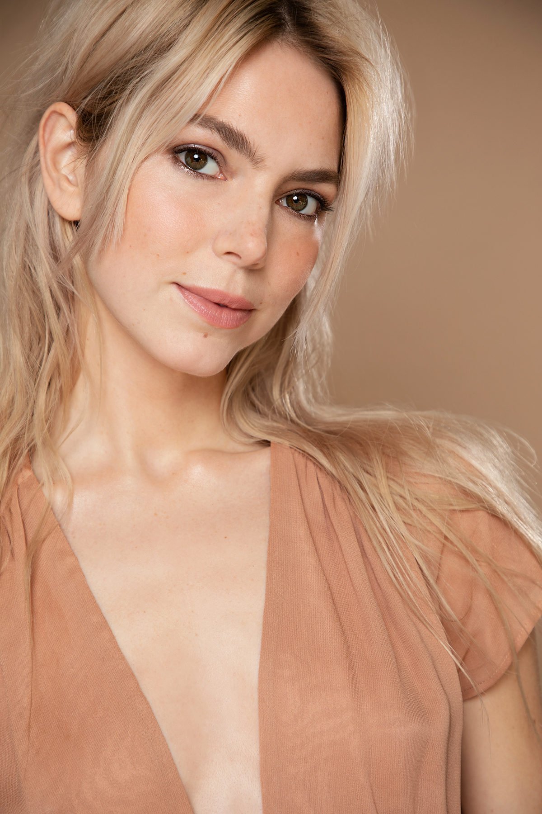

Alyson Gorske is an actor and artist based in Los Angeles, California. She recently starred in the Netflix original, Obliterated, which premiered on November 30ᵗʰ, 2023. Fans of horror can catch her leading role in The Puppetman, released on Shudder & AMC+ on October 13ᵗʰ, 2023. Additionally, Alyson can be seen in Apple TV's Shrinking and HBO's Head of Class.
Alyson moved to Los Angeles from Washington D.C. when she was just 18 years old, quickly earning herself a full-time scholarship at Stella Adler Academy of Acting and then a merit-based scholarship at The American Academy of Dramatic Arts. While pursuing a career in television and film, she has kept her theater roots at the Echo Theater Company where she still studies and performs today.
See more headshots below—
